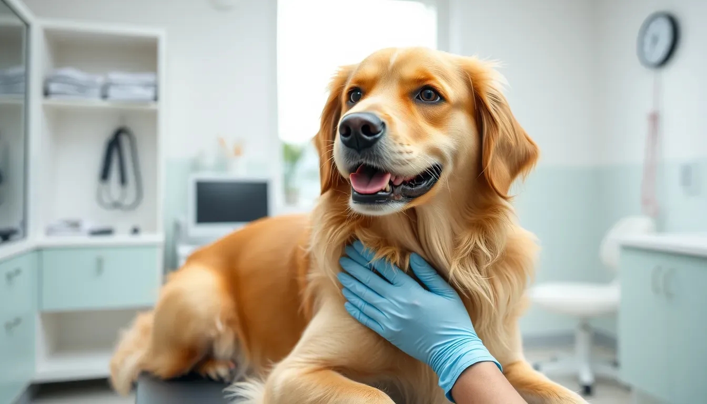

По записи
Ветклиника «Центр травматологии животных»
Клиника профессора Игоря Борисовича Самошкина: травматология, ортопедия и хирургия опорно-двигательного аппарата.
Заслуженный врач РФПрофессор, д.в.н.Запись по телефонуКонсультации онлайн

Почему «Центр травматологии животных»
Травматология
Разрывы и растяжения связок, переломы, вывихи и множественные повреждения костей.
Ортопедия
Дисплазия тазобедренных и локтевых суставов, эндопротезирование, искривления конечностей.
Реконструктивная хирургия
Восстановительные операции любой сложности на опорно-двигательном аппарате.
Полостная хирургия
Патологические роды, пиометры, инородные тела, мочекаменная болезнь, онкология.
Экспертная оценка дисплазии
Обследование собак и кошек с выдачей официального экспертного заключения.
Как нас найти
- АдресМосква, 2-й Лихачёвский переулок, 6
- Телефон+7 (926) 078-55-55
- Почтаisamoshkin@mail.ru
- Режим работыПриём по предварительной записи, по телефону
Запишитесь на приём
Москва, 2-й Лихачёвский переулок, 6